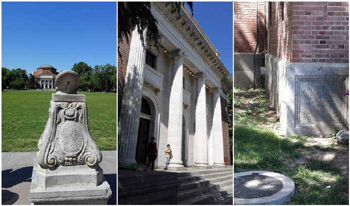
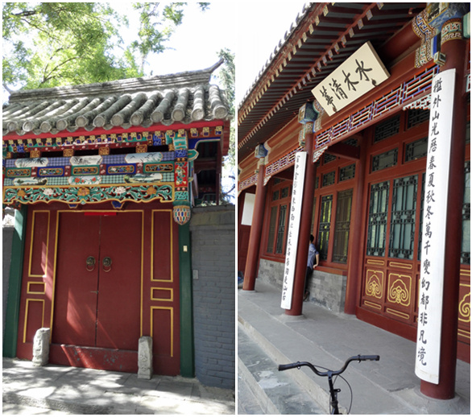
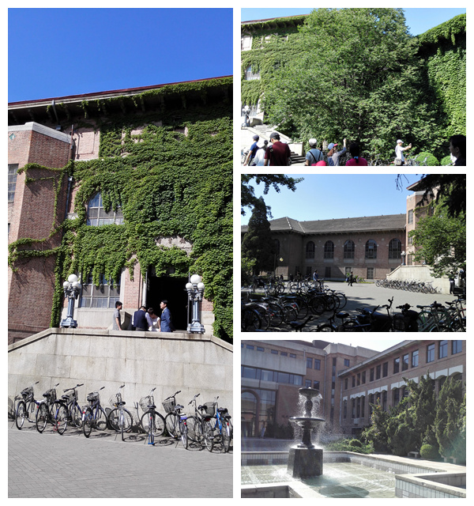
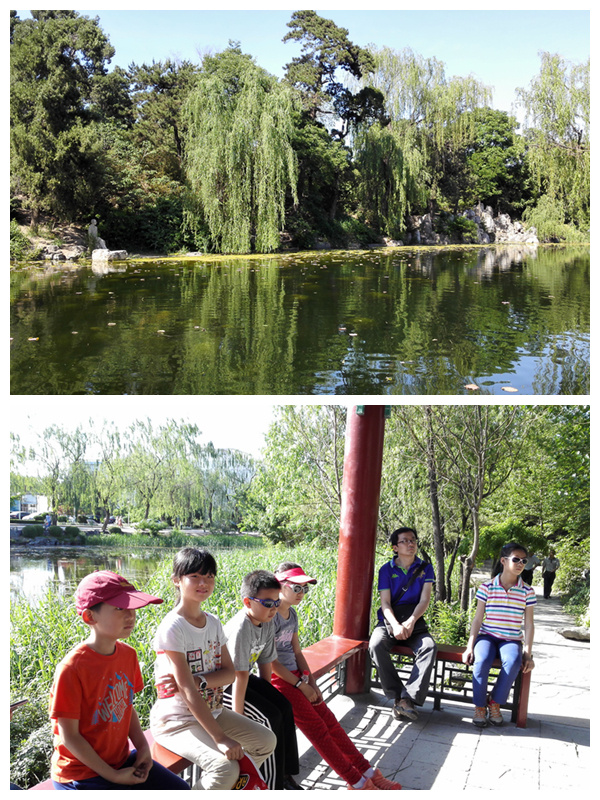
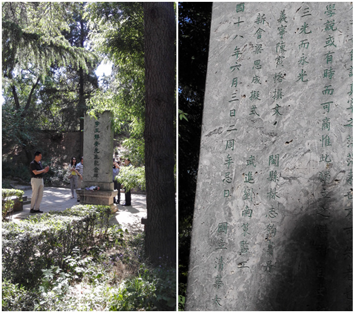

四座老建筑：大礼堂、科学楼、老图书馆、西体育馆。
四座亭子：自清亭、荷塘月色亭、闻亭、晗亭。
四座雕像：朱自清、闻一多、马约翰、吴晗。

亨利墨菲设计的大礼堂，完全是美国大学的风格

清华园的正门和后门，现在是清华校机关的办公地点

老图书馆，分为四期，一期是梁思成设计，现在已经被爬山虎覆盖。二期由梁思成的学生设计成雁翅形，与一期完全对称，古色古香的建筑是民国电影青睐的取景地。

两个荷塘，一个池边有朱自清雕像和自清亭。但是后来考证发现朱自清写荷塘月色的是另一个荷塘，于是又建了一座荷塘月色亭。

十分不起眼的海宁王静安先生纪念碑，陈寅恪撰文，梁思成拟式，原来就是王国维先生